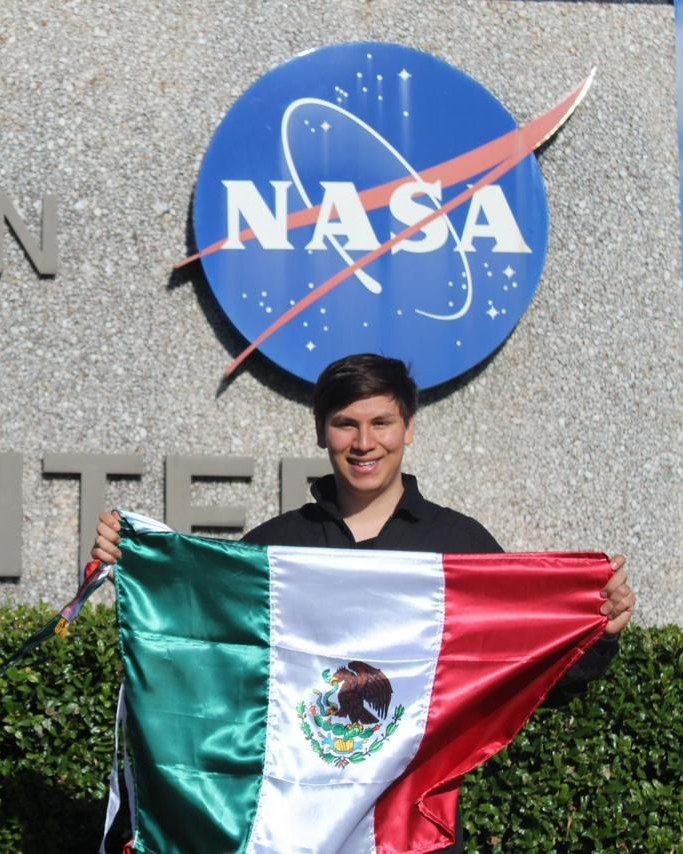
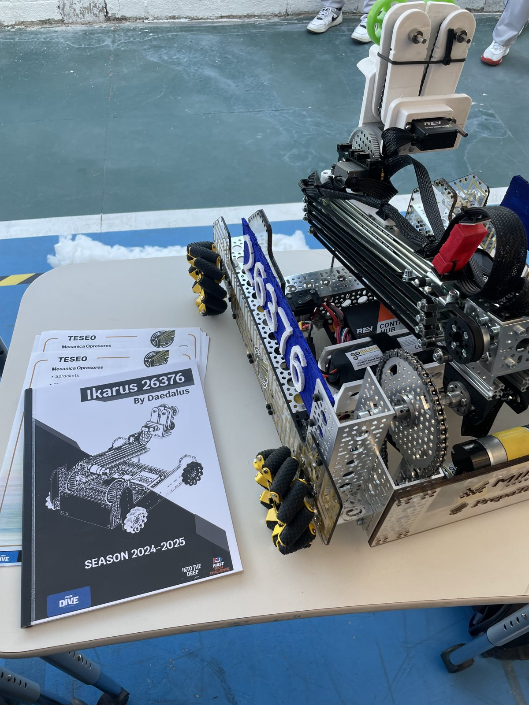
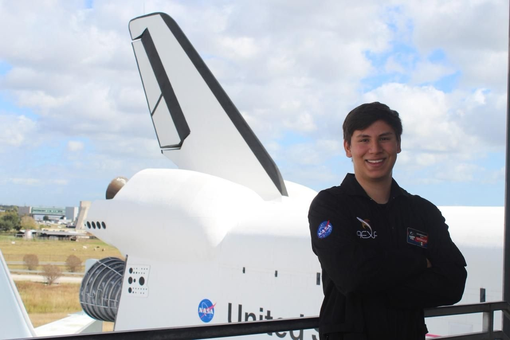

Luis Mota
Estudiante de Ingeniería Mecánica
Mechanical Engineering Student
Diseño mecánico, estructuras y manufactura aeroespacial
Mechanical Design, Structures & Aerospace Manufacturing
Líder de Diseño y Manufactura en Ignitia Rocket Team · Tec de Monterrey
Design & Manufacturing Lead at Ignitia Rocket Team · Tec de Monterrey
Diseño, simulo (FEA/CFD) y fabrico componentes de aluminio y materiales compuestos para cohetes experimentales, del modelo CAD a la prueba estática. Antes fui capitán de FRC Daedalus 7102, campeón nacional de robótica 2025.
I design, simulate (FEA/CFD) and manufacture aluminum and composite components for experimental rockets, from CAD model to static fire. Before that I captained FRC Daedalus 7102, Mexico's 2025 national robotics champion.

Tu foto profesionalimg/perfil.jpgYour headshot
img/perfil.jpg
Diseño y CADDesign & CAD
- SolidWorks (CSWP)
- Fusion 360
- Onshape
- Planos de ingenieríaEngineering drawings
- EnsamblesAssemblies
Análisis y simulaciónAnalysis & simulation
- FEA
- CFD
- MATLAB
ManufacturaManufacturing
- DFM
- CNC
- Maquinado convencionalConventional machining
- Materiales compuestosComposites
- Ensamble mecánicoMechanical assembly
Pruebas e integraciónTesting & integration
- Static fire
- Desarrollo de prototiposPrototyping
- Integración de sistemasSystem integration
Todas mis certificaciones en LinkedInAll my certifications on LinkedIn
Soy estudiante de Ingeniería Mecánica en el Tecnológico de Monterrey. En Ignitia, el equipo de cohetería experimental del Tec, lidero el equipo de Diseño y Manufactura y formo parte de la mesa directiva: llevamos cada componente del modelo CAD a la simulación, al taller y a la prueba estática.
I'm a Mechanical Engineering student at Tecnológico de Monterrey. At Ignitia, Tec's experimental rocketry team, I lead the Design & Manufacturing team and sit on the board: we take every component from CAD model to simulation, to the shop floor and to static fire.
Antes de los cohetes vinieron los robots: fui capitán de FRC Daedalus 7102, campeón nacional en 2025, y fundé el equipo FTC Ikarus. Ahí aprendí a llevar un diseño mecánico de la idea a la competencia y a coordinar equipos multidisciplinarios bajo presión. Busco aplicar eso en la industria aeroespacial.
Before rockets came robots: I captained FRC Daedalus 7102, Mexico's 2025 national champion, and founded FTC team Ikarus. That's where I learned to take a mechanical design from idea to competition and to coordinate multidisciplinary teams under pressure. I want to bring that to the aerospace industry.
Cohetería y robótica de competenciaRocketry and competition robotics
-
ActualPresent
Líder de Diseño y Manufactura · Mesa directivaDesign & Manufacturing Lead · Board member
Ignitia Rocket Team · Tec de MonterreyLidero el diseño, simulación (FEA/CFD), manufactura y validación de componentes de cohetes experimentales, en coordinación con propulsión, aviónica y recuperación.
I lead the design, simulation (FEA/CFD), manufacturing and validation of experimental rocket components, coordinating with propulsion, avionics and recovery.
-
20252025
CapitánTeam Captain
FIRST Robotics Competition · Daedalus 7102Coordiné el diseño mecánico y la integración del robot. Campeones nacionales 2025 y clasificados al Mundial en Houston.
Coordinated the robot's mechanical design and integration. 2025 national champions and World Championship qualifiers.
-
PreparatoriaHigh school
Fundador y capitánFounder & Team Captain
FIRST Tech Challenge · Ikarus 26376Fundé y administré el equipo; coordiné la ingeniería y la capacitación técnica. Think Award y clasificación al nacional.
Founded and managed the team; coordinated engineering and technical training. Think Award and national qualifier.
-
20232023
Curso de Diseño Mecánico BásicoBasic Mechanical Design Course
MIDO Group · PrepaTecCertificación en diseño mecánico, primera etapa de la colaboración de MIDO Group con el programa de robótica del Tec de Monterrey.
Mechanical design certification, the first stage of MIDO Group's collaboration with Tec de Monterrey's robotics program.
Del modelo CAD a la plataforma de lanzamientoFrom CAD model to launch pad
 img/ignitia.jpg
img/ignitia.jpgIgnitia Rocket Team
Líder de Diseño y Manufactura · Mesa directivaDesign & Manufacturing Lead · Board memberDiseño, simulo y fabrico los componentes estructurales de los cohetes experimentales del Tec, del modelo CAD a la prueba estática.
I design, simulate and build the structural components of Tec's experimental rockets, from CAD model to static fire.
- SolidWorks
- Fusion 360
- FEA
- CFD
- DFM
- CNC
 img/frc-daedalus.jpg
img/frc-daedalus.jpgFRC Daedalus 7102
CapitánTeam CaptainCapitán del equipo de FIRST Robotics Competition que ganó el campeonato nacional de México y clasificó al Mundial en Houston.
Captain of the FIRST Robotics Competition team that won Mexico's national championship and qualified for Worlds in Houston.
Ver proyectoView project
img/ftc-ikarus.jpgFTC Ikarus 26376
Fundador y capitánFounder & Team CaptainFundé desde cero este equipo de FIRST Tech Challenge y lo llevamos al campeonato nacional, donde ganamos el Think Award.
I founded this FIRST Tech Challenge team from scratch and took it to the national championship, where we won the Think Award.
Ver proyectoView project
img/nasa-iasp.jpgInternational Air and Space Program
NASA & AEXANASA & AEXATercer lugar en el programa aeroespacial internacional de NASA y AEXA, además de mi participación en NASA Astrocamp.
Third place in NASA and AEXA's international aerospace program, plus my participation in NASA Astrocamp.
Ver proyectoView projectPremios y distincionesAwards and honors
- 2025Campeón Nacional FRC MéxicoFRC Mexico National ChampionFRC Daedalus 7102
- 2025Representante de México en el Mundial de robóticaRepresented Mexico at the FIRST World ChampionshipHouston, Texas
- NASA3er lugar · International Air and Space Program3rd place · International Air and Space ProgramNASA & AEXA
- FTCThink AwardThink AwardFTC Ikarus 26376
- FRCMejor Sistema de Control (2 veces)Best Control System (2×)FRC Daedalus 7102
- FRCMejor Robot AutónomoBest Autonomous RobotFRC Daedalus 7102
- FRC2º lugar Impact Award2nd place Impact AwardFRC Daedalus 7102
- 2022SASMOSASMOSingapore and Asian Schools Math Olympiad
Liderazgo e impacto socialLeadership & social impact
Mentoría STEAMSTEAM mentoring
- Mentor del equipo Sinavolt · NASA Astrocamp
- Organización del Off-Season Guadalajara
- Planeación de la Beca STEAM y capacitaciones técnicas
- Mentor to team Sinavolt · NASA Astrocamp
- Organizer of the Guadalajara Off-Season
- STEAM Scholarship planning and technical training
Liderazgo estudiantilStudent leadership
- Fundador y presidente de la Sociedad de Debate Kairos
- Equipo de debate Apolo · Carnero · VIVETEC
- Founder and president of Kairos Debate Society
- Apolo Debate Team · Carnero · VIVETEC
Impacto socialSocial impact
- Líder de cuadrilla en TECHO, construcción de viviendas
- Voluntariado con niños de oncología, Hospital Civil
- Programa de sustentabilidad y reciclaje con HPE
- Crew leader at TECHO, building homes
- Volunteer with pediatric oncology patients, Hospital Civil
- Sustainability and recycling program with HPE